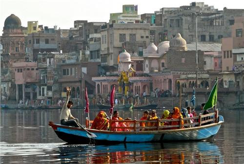

Itinerary
- Arrive in Vrindavan and check into your accommodation. Afternoon:
- Visit Banke Bihari Temple, immerse yourself in the vibrant bhajan sessions, and experience the temple's spiritual ambiance. Evening:
- Explore the ISKCON Temple complex, attend the evening aarti ceremony, and enjoy dinner in the nearby market.
- Visit Radha Raman Temple and participate in the morning prayers. Afternoon:
- Explore Seva Kunj and Nidhuban, known for their lush gardens and sacred groves associated with Radha-Krishna's divine pastimes. Evening:
- Attend a cultural program showcasing classical music or dance performances.
- Depart for Govardhan Hill and start the Govardhan Parikrama (circumambulation) on foot or by vehicle. Afternoon:
- Visit important sites like Radha Kund, Shyama Kund, and Giriraj Temple during the parikrama. Evening:
- Return to Vrindavan and rest.
- Visit Krishna Janmabhoomi Temple Complex in Mathura, including the birthplace of Lord Krishna. Afternoon:
- Explore Dwarkadhish Temple and Vishram Ghat along the Yamuna River. Evening:
- Witness the spectacular Krishna Leela performances depicting Lord Krishna's life and stories.
- Visit Nandgaon, the village of Lord Krishna's foster father Nanda Maharaj, and experience the unique Lathmar Holi festivities (if visiting during Holi season). Afternoon:
- Explore Barsana, known for Radha Rani Temple and the colorful Lathmar Holi celebrations. Evening:
- Return to Vrindavan and relax.
- other significant temples in Vrindavan like Radha Damodar Temple, Radha Vallabh Temple, and Madan Mohan Temple. Afternoon:
- Enjoy shopping for souvenirs like traditional clothing, handicrafts, and spiritual items in the local markets. Evening:
- Attend the mesmerizing aarti at one of the temples and savor local delicacies for dinner.
- Spend some leisure time in Vrindavan, revisiting favorite spots or exploring nearby areas. Afternoon:
- Check out from your accommodation and depart for your onward journey.
Day 1: Arrival in Vrindavan
Morning:Day 2: Vrindavan Exploration
Morning:Day 3: Govardhan Parikrama
Morning:Day 4: Mathura Exploration
Morning:Day 5: Brij Region Excursion
Morning:Day 6:Vrindavan Temples and Shopping
Morning:Day 7: Departure
Morning:Places to Visit

- It is one of the most sacred places for Vaishnavism tradition.Vrindavan is a significant part of the "Krishna pilgrimage circuit" which also includes Mathura, Barsana, Gokul, Govardhan, Kurukshetra, Dwarka and Puri.
- Location: It is located in the Braj Bhoomi region. Vrindavan has about 5,500 temples dedicated to the worship of Krishna and his chief consort Radha.
- Geography: Vrindavan is situated on the west bank of the Yamuna River, about 15 kilometres north of Mathura. Yamuna river flows through the city. It is located 125 km away from Delhi and 15 km away from Mathura City.
- Tourist Attraction: Vrindavan attracts travelers worldwide who come to admire its spiritual happiness.
- Accessibility: Accessible by Air, Train, Road, Local Transportation.
- Permit Requirement: Most temples in Vrindavan, such as Banke Bihari Temple, ISKCON Temple, and others, do not require special permits for entry. Visitors are expected to adhere to temple guidelines regarding dress code, photography restrictions, and respectful behavior during worship.
- Best Time to Visit: Autumn to winter (October to March) is often considered the best time to visit Vrindavan due to pleasant weather, major festivals, and cultural vibrancy. However, each season offers unique experiences.
Vrindavan
Govardhan
- Govardhan also called Giriraj, is a key pilgrimage centre in India and a municipal town; a nagar panchayat; seat of an MLA (Member of Legislative Assembly) of Uttar Pradesh; a Tehsil, in Mathura district in India in the state of Uttar Pradesh. About 23 kilometres from Mathura, the town is on the road link between Mathura and Deeg.
- Historical and Mythological Significance: Govardhan Hill holds immense historical and mythological importance in Hinduism, revered for Lord Krishna's divine pastime of lifting the hill to protect villagers and its association with sacred scriptures.
- Govardhan Parikrama:Govardhan Parikrama is a sacred circumambulation around Govardhan Hill, a revered pilgrimage practice in Hinduism. It involves walking around the hill to seek blessings and spiritual merit.
- Important Temples and Ashrams:Govardhan Temple: Sacred shrine atop Govardhan Hill.
Radha Kund: Holy water reservoir associated with Radha-Krishna.
Manasi Ganga: Sacred lake connected to Krishna's pastimes.
Daan Ghati Mandir: Ancient temple with historical significance. - Scenic Beauty and Natural Attractions:Govardhan boasts serene landscapes, lush greenery, and views of the Yamuna River, creating a picturesque setting for spiritual introspection and enjoying the natural beauty of the sacred hill.
Mathura
The birthplace of Krishna, one of the main deities in that religion, is believed to be located in Mathura at the Krishna Janmasthan Temple Complex.It is one of the Sapta Puri, the seven cities considered holy by Hindus, also is called Mokshyadayni Tirth. The Kesava Deo Temple was built in ancient times on the site of Krishna's birthplace (an underground prison). Mathura was the capital of the kingdom of Surasena, ruled by Kamsa, the maternal uncle of Krishna. Mathura is part of the Krishna circuit (Mathura, Vrindavan, Barsana, Govardhan, Kurukshetra, Dwarka and Bhalka). Janmashtami is grandly celebrated in Mathura every year.
Location
Mathura is a historically and culturally significant city located in the northern part of India, specifically in the state of Uttar Pradesh.
History
Mathura is one of the oldest cities in India and holds immense historical and religious significance, especially in Hinduism.
It is widely recognized as the birthplace of Lord Krishna, making it a major pilgrimage site for devotees.
Accessibility
Mathura is well-connected by road and rail. Mathura Junction is a major railway station, with trains connecting to major cities like Delhi, Agra, Jaipur, and more.
Tourists can also reach Mathura via road from nearby cities like Delhi (about 160 km away) and Agra (about 55 km away).
Best Time to Visit
The ideal time to visit Mathura is during the winter months from October to March when the weather is pleasant for sightseeing and outdoor activities.
Additionally, festivals like Holi, Janmashtami, and Diwali are celebrated with great fervor in Mathura, making these times highly recommended for cultural experiences.
Places to Visit
Krishna Janmabhoomi Temple Complex: The birthplace of Lord Krishna, featuring temples, shrines, and historical exhibits related to Krishna's life.
Dwarkadhish Temple: A major Krishna temple known for its stunning architecture and religious significance.
Vishram Ghat: A sacred bathing ghat on the Yamuna River where Lord Krishna is believed to have rested after defeating the demon Kansa.
Shri Krishna Janmasthan Museum: Showcasing artifacts, paintings, and sculptures depicting Krishna's life and legends.
Kans Qila (Kansa Fort): A historic fort associated with the legendary demon king Kansa, offering insights into Mathura's ancient past.
Local Culture and Cuisine
Mathura is known for its vibrant culture, colorful festivals, and traditional arts like music, dance, and poetry.
Visitors can indulge in local delicacies like Mathura peda (sweet), kachori, lassi, and various vegetarian dishes reflecting the region's culinary heritage.
Shopping and Souvenirs
Tourists can explore local markets like the Holi Gate Market, Chowk Bazaar, and Tilak Dwar for traditional clothing, handicrafts, idols of Lord Krishna, and souvenirs representing Mathura's culture.
Brij Region
Braj, also known as Vraj, Vraja, Brij or Brijbhumi, is a region in India on both sides of the Yamuna river with its centre at Mathura-Vrindavan in Uttar Pradesh state
Barsana
Barsana is a significant and culturally rich town located near Mathura in the state of Uttar Pradesh, India. It holds immense religious importance, especially in Hinduism, particularly for its association with Lord Krishna and Radha.
- Location: Barsana is situated approximately 42 kilometers from Mathura city in the Mathura district of Uttar Pradesh, India.
It is part of the Braj region, renowned for its connection to the divine love of Lord Krishna and Radha. - Historical and Religious Significance: Barsana is famously known as the birthplace of Radha Rani, the beloved consort of Lord Krishna.
The town is celebrated for its Lathmar Holi festival, where women playfully beat men with sticks (lathis) in a colorful and joyous celebration of Radha-Krishna's divine love.
Numerous temples dedicated to Radha and Krishna are scattered throughout Barsana, including the Radha Rani Temple, which is a major pilgrimage site attracting devotees from far and wide. - Lathmar Holi Festival: Highlight the uniqueness and cultural significance of the Lathmar Holi festival, which occurs in Barsana and nearby Nandgaon.
- Attractions and Temples:
- Radha Rani Temple: Describing the architectural beauty and spiritual ambiance of this temple dedicated to Radha Rani, attracting devotees and tourists alike.
- Maan Mandir: Another significant temple complex in Barsana showcasing intricate artwork and religious heritage.
- Local Culture and Traditions:Emphasize the traditional lifestyle, folk arts, and musical traditions of Barsana, offering visitors insights into the vibrant culture of Braj.
Participation in local festivities, cultural programs, and interactions with locals to experience the authentic charm of Barsana.
Nandgaon
Nandgaon is a quaint and historic village located in the Mathura district of Uttar Pradesh, India. It holds immense religious significance, especially in Hinduism, as it is associated with the childhood pastimes of Lord Krishna.
- Location and Accessibility: Nandgaon is located approximately 10 kilometers north of Barsana and about 40 kilometers from Mathura city.
Travelers can reach Nandgaon by road from Mathura, Vrindavan, and other nearby towns. Local buses, taxis, and private vehicles are available for transportation. - Historical and Mythological Significance: Nandgaon is renowned as the village of Nanda Maharaj, the foster father of Lord Krishna. It is where Lord Krishna spent his early childhood and adolescent years.
The village is associated with various childhood pastimes (leelas) of Lord Krishna, including his playful interactions with cowherd friends and the divine love with Radha. - Temples and Attractions:
- Nand Rai Temple: The main temple in Nandgaon dedicated to Lord Krishna as Nand Rai, showcasing beautiful idols and intricate architecture.
- Nand Bhavan: A significant place believed to be the house of Nanda Maharaj, where Lord Krishna grew up. Pilgrims visit this site to experience the divine presence.
- Ukhra Kund: A sacred pond where it is said that the milkmaids (gopis) of Nandgaon used to come to fetch water, and Lord Krishna playfully teased them.
- Festivals and Celebrations:
- Holi Festival: Nandgaon is famous for its unique Lathmar Holi celebration, where women playfully hit men with sticks, symbolizing the playful antics of Lord Krishna and the gopis.
- Janmashtami: The birth anniversary of Lord Krishna is celebrated with great fervor and enthusiasm in Nandgaon, attracting devotees from far and wide.
- Explore the vibrant rural culture of Uttar Pradesh, including traditional music, dance, and art forms showcasing the rich heritage of the region.
Taste local delicacies such as peda (sweet milk fudge), mathri (savory snack), and lassi (yogurt-based drink) offered at local eateries and sweet shops.